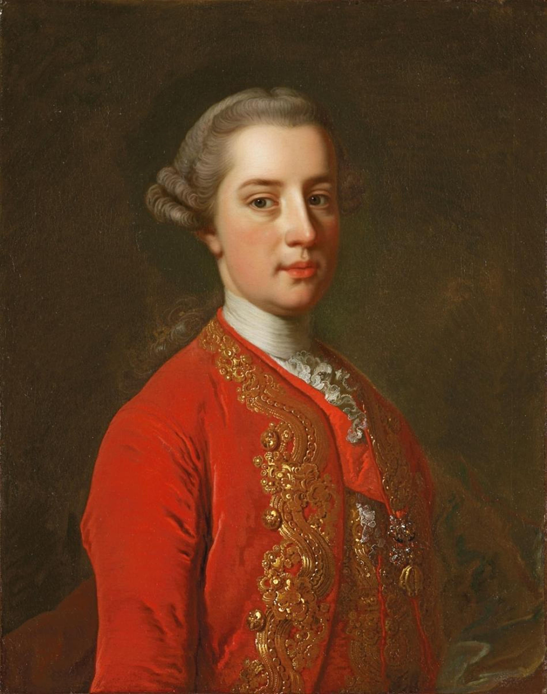

Австрия
В 1768 году Австрия была частью мощной империи, правителем которой был император Иосиф II. В это время Австрия вела активную внешнюю политику, стремясь увеличить свои владения и влияние в Европе. Империя находилась в периоде экономического и культурного развития, что способствовало укреплению своего положения на международной арене.
Внутри страны в это время происходили реформы, проводимые Иосифом II, направленные на укрепление центральной власти, улучшение административной системы, реформы в области образования и военного дела. Также в это время в Австрии происходили социальные и культурные изменения, стремление к прогрессу и модернизации.

Несмотря на определенные трудности и противоречия, Австрия в 1768 году оставалась одним из ведущих государств Европы, и ее влияние на международной арене продолжало укрепляться.